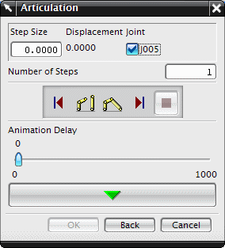

铰接是基于位移的解算方案，您可以在其中指定单个运动副的离散步。
当您定义铰接驱动时，可以选择运动分析工具条上的铰接运动来设置运动中的运动副，并输入步长与步数值。
要访问铰接运动驱动对话框，创建一个铰接解算方案并求解，您可以选中解算方案对话框中的通过按“确定”进行解算复选框，以直接求解解算方案。

将在铰接运动驱动对话框的顶部显示已经指派运动驱动的运动副列表。
您可以通过选中运动副名称旁的复选框来激活铰接运动副，这将激活步长输入框以进行编辑。
使用步数输入框来输入运动副在铰接运动时运动的步数。